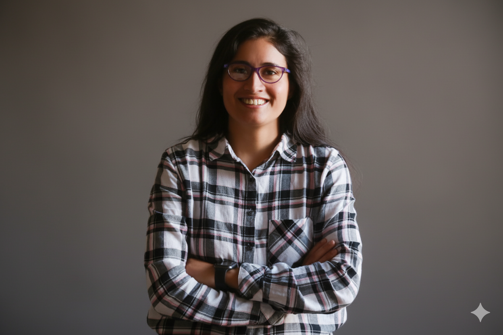

Hi, I'm Farjana Yesmin.
Machine Learning Researcher · Trustworthy AI for Healthcare
I am a Machine Learning Researcher dedicated to building AI systems that are as equitable as they are intelligent. My work sits at the intersection of Privacy-Preserving Federated Learning, Explainable AI, and Trustworthy Healthcare AI. I am the author and maintainer of FairHealth, an open-source Python library for fairness and privacy in clinical AI. I believe technology truly serves people only when it is grounded in transparency and clinical validation. Outside research, I find balance through the piano, the outdoors, and stories discovered while traveling.

FY
'"/>
Research
Privacy-Preserving Federated Learning
MedHE: CKKS homomorphic encryption combined with adaptive gradient sparsification — achieving 97.5% communication reduction without sacrificing accuracy or HIPAA compliance.
Fairness & Explainability
Intersectional bias diagnosis in image classifiers, fairness-aware ECG models across demographics, and Hybrid Fuzzy-XGBoost frameworks validated directly with clinicians (N=14).
Healthcare Applications
Dengue symptom triage chatbots, wearable fall detection for Parkinson's, maternal health risk prediction, and post-disaster equitable aid allocation in Bangladesh.
News
May 2026Invited as Reviewer — ECAF 2026, Ghent, Belgium.Invited
Apr 2026Book chapter accepted — "Clinician-in-the-Loop Agentic Systems for Maternal Healthcare", Springer Nature.Accepted
Apr 2026Paper accepted at MobiHealth 2026 (EAI, Heraklion) — Fairness-Aware ECG Disease Prediction in Wearable Systems.Accepted
Apr 2026Op-ed in Prothom Alo English — "When the algorithm doesn't listen: AI and justice in Bangladesh's clinics."Press
Apr 2026Paper accepted at ICAIHE 2026, Waseda University, Tokyo — Explainable AI for Maternal Health Risk Prediction.Accepted
Mar 2026Paper accepted at CCAI 2026 (IEEE, Nanjing) — Fairness-Aware AI for Post-Flood Aid.Accepted
Mar 2026PC Member — DravidianLangTech & LTEDI at ACL 2026.Service
Mar 2026Confirmed ACM Certified Reviewer — ACM HEALTH, TIST, ACMJRC, TOMM.Service
Oct 2025Two papers accepted at DASGRI 2026 (Springer LNNS, London) — Air Quality Prediction & Health Bulletin Analysis.Accepted
Oct 2025Paper accepted at EAI Healthwear 2025, Isparta, Turkey — ECG Disease Prediction in Wearable Systems.Accepted
Publications
Peer-Reviewed
AI Chatbots for Dengue Symptom Triage in Bangladesh: A Decision Tree Classifier Approach
Farjana Yesmin
Springer LNNS · DASGRI 2026, London
↗ ResearchGateOptimized Hybrid ML Framework for Real-Time Air Quality Prediction in IoT-Enabled Smart Cities
Farjana Yesmin
Springer LNNS · DASGRI 2026, London
↗ ResearchGateEvolving Health Indicators in Bangladesh: A Comparative Analysis Using Data Science Tools
Farjana Yesmin, Nusrat Shirmin
Springer LNNS · DASGRI 2026, London
↗ ResearchGateCross-Domain Evaluation for Multi-Task Learning in NLP: A Unified Framework for Generalization and Robustness
Farjana Yesmin
Artificial Intelligence eJournal, 8(4), 2025
↗ SSRN
Accepted · Forthcoming
Explainable AI for Maternal Health Risk Prediction: A Hybrid Fuzzy-XGBoost Framework with Clinician Validation
Farjana Yesmin, Nusrat Shirmin, Suraiya Shabnam Bristy
ICAIHE 2026 · Waseda University, Tokyo · July 2026
↗ PreprintFairness-Aware Representation Learning for ECG-Based Disease Prediction in Wearable Systems
Farjana Yesmin, Nusrat Shirmin
MobiHealth 2026 (EAI) · Heraklion, Greece · June 2026
↗ PreprintToward Equitable Recovery: A Fairness-Aware AI Framework for Prioritizing Post-Flood Aid in Bangladesh
Farjana Yesmin, Romana Akter
CCAI 2026 (IEEE) · Nanjing, China · May 2026
↗ arXiv
Forthcoming Book Chapters
Clinician-in-the-Loop Agentic Systems for Maternal Healthcare in Low-Resource Settings
Farjana Yesmin
In: Sustainable Agentic AI: Building Autonomous Systems for Social Good (Eds. M. Mehrotra et al.) · Springer Nature · Accepted
Rule-Augmented Explainable AI for Multimodal Biosignal Monitoring in Low-Resource Healthcare
Farjana Yesmin
In: Explainable AI in Multimedia and Multimodal Applications · CRC Press / Taylor & Francis Group · Proposal Under Review
Under Review
ALGFF: Attention-LSTM with Geopolitical Feature Fusion for Crisis Economics Forecasting
Farjana Yesmin
IEEE ICDM 2026 · International Conference on Data Mining
MedHE: Communication-Efficient Privacy-Preserving Federated Learning with Adaptive Gradient Sparsification for Healthcare
Farjana Yesmin
CIBB 2026
↗ arXiv↗ CodeIntersectional Bias in Image Classification: Diagnostic Explainability for Fairness Analysis
Farjana Yesmin
ECAF 2026
Equity by Design: Fairness-Aware Explainable AI for Maternal Health Risk Assessment in Low-Resource Bangladesh
Farjana Yesmin, Nusrat Shirmin, Suraiya Shabnam Bristy
ECAF 2026
Wearable Fall Detection in Parkinson's Disease Using Multi-Sensor Fusion, Transformer Encoding, and Attention-Based Explainability
Farjana Yesmin
ACM ICMI 2026
Beyond the Black Box: Claim-Level Interpretability for Accountable Retrieval-Augmented Generation
Farjana Yesmin, Nusrat Shirmin
ECAF 2026
Generative AI for Synthetic Multimodal Sensor Data in Situation Awareness Training
Farjana Yesmin
ACM ICMI 2026
When Symbolic Rules Cannot Find Their Own Triggers: Epistemic Diagnosis of Predicate Grounding Collapse in Neuro-Symbolic Fraud Detection
Farjana Yesmin, Nusrat Shirmin
EIML@ICML 2026
In Preparation
Constraint-Aware Neuro-Symbolic Learning under Structural and Domain Knowledge
Farjana Yesmin, Nusrat Shirmin
Target: NeSy 2026 · 20th International Conference on Neurosymbolic Learning and Reasoning
Projects
🔒
MedHE: Privacy-Preserving Federated Learning
CKKS homomorphic encryption + adaptive gradient sparsification for secure collaborative learning across medical institutions.
97.5% comm. reduction · 89.5% accuracy · ε ≤ 1.0
Federated LearningCKKSDifferential Privacy
↗ Paper
↗ Code
🤖
AI Chatbots for Healthcare in Bangladesh
Decision-tree chatbot for dengue fever symptom triage in low-bandwidth clinical settings across Bangladesh.
Published · DASGRI 2026 · Springer LNNS
NLPDecision TreesHealthcare
↗ Paper
↗ Colab
🏃
Wearable Fall Detection — Parkinson's
Multi-sensor fusion with transformer encoding for real-time Freezing of Gait detection and attention-based clinical explainability.
Under Review · ACM ICMI 2026
TransformersSensor FusionXAI
Experience
2020 – Present
Graduate Research Assistant
University of Tulsa, OK
Multimodal deep learning for immune responses, neuropsychiatric disorders, and healthcare AI. Machine learning, network theory, and information theory.
Summer 2020
Summer Externship, AT&T
Leadership and technology strategy across HR, finance, and technology. Market trend analysis and business innovation.
Summer 2020
Summer Scholar, HP
Technology, sales, and analytics at a Fortune 500 company. Participated in the HP Bot-a-Thon RPA automation competition using UiPath. Certificate from HP Chief Transformation Officer.
Aug 2018 – Mar 2019
Graduate Teaching Assistant
Boise State University, ID
Taught Java and Data Structures programming labs. Mentored students in algorithms and debugging.
Skills
ML & AI
PyTorchTensorFlow
Scikit-learnXGBoost
Transformers / HuggingFaceFederated Learning
Homomorphic EncryptionDifferential Privacy
Neuro-Symbolic AISHAP / LIME
Time Series AnalysisBioinformatics
Computer VisionNLP
LLMs & RAGFuzzy Logic
Programming
PythonR
JavaC++
SQL / MySQLHTML / CSS / JS
Tools & Platforms
Git & GitHubDocker
KubernetesJupyter
Google ColabTableau
MATLABSplunk
UiPath / RPACKKS Libraries
LaTeXMicrosoft Excel
Education
University of Tulsa
PhD in Computing
Boise State University
PhD in Computing (Transferred)
Jashore University of Science & Technology
B.Sc. in Computer Science & Engineering
Certifications
Nature Masterclasses: Focus on Peer Review · Springer Nature · Jan 2026
Elsevier Certified Peer Reviewer · Jan 2026
ACM Peer Reviewer Training · ACM
Google Data Analytics Professional
IBM Data Science & Applied AI Professional
UiPath RPA Certifications & MS Excel
Academic Service
2026Reviewer — ECAF 2026 (European Conf. on Algorithmic Fairness, Ghent)
2026Reviewer — EIML@ICML 2026 (Epistemic Intelligence in ML, Seoul)
2026Reviewer — ACM ICMI 2026 (Multimodal Interaction, Naples)
2026PC Member — DravidianLangTech & LTEDI @ ACL 2026
2026Reviewer — IndabaX Nigeria 2026 (PMLR Vol. 319)
2026ACM Certified Reviewer — HEALTH · TIST · ACMJRC · TOMM
2026Reviewer — ACM IUI 2026 · PeerJ CS · ICICST 2026
2025PC Reviewer — ACM ICMI 2025 · AI for Math @ ICML · MUGen @ ICML · Deep Learning Indaba Ideathon
Featured In
Prothom Alo English —
"When the algorithm doesn't listen: AI and justice in Bangladesh's clinics" (Apr 2026)
Prothom Alo English —
"Bangladeshi researcher's quest to bridge technology and healthcare" (Mar 2026)
Prothom Alo Bengali — Three-part AI research series in
Dur Porobash:
Part 1 ·
Part 2 ·
Part 3BD Gen 24 — Contributions to AI research and international academia
Beyond Research
Sports & Outdoors
🥾 Hiking
🏊 Swimming
🚴 Cycling
🎾 Tennis
🏃 Running
⛺ Camping
18 US states explored.
Music & Reading
Amateur pianist — watch a performance ↗
PhilosophySci-FiMystery
ThrillerHistoryPsychology
PoetryBiographyFantasyTravel
Other Information
Mobility: Open to relocation (Nordic/EU/North America) and fully remote work. Open to learning new languages for new opportunities.
Languages: Bengali (Native) · English (Fluent) · Norwegian (Elementary, Duolingo Score: 15, May 2026, Diamond League 🏆, 175-day streak).
Memberships: SAI Organization member & TPC applicant for IntelliSys, Computing Conference, and FTC (under formal review).
Blog
I write about the philosophy and practice of trustworthy AI — from epistemic injustice in clinical algorithms to differential privacy trade-offs in global health. View all posts →